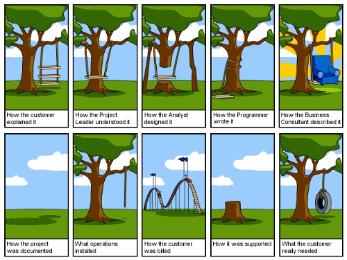

Disciplinas
-
Formação Profissional em Computação Concluído
Materiais
- (Vídeo 2) - Formação Profissional em Computação - Projeto de Desenvolvimento de Software, algoritmo.
-
Professor ministrante: Alessandra Alaniz Macedo
Conteúdo
Projeto de Desenvolvimento de Software, algoritmo.
Projeto:
- "Um projeto é um esforço temporário que tem como finalidade um resultado único e possui recursos delimitados". PMBOK, PMI (Project Management Institute)
PMI é uma organização sem fins lucrativos cujo o objetivo é disseminar as melhores práticas da gestão de projetos.
Projeto é temporário, pois deve ter datas de início e fim definidas. Também é iniciado com a intenção de criar um novo produto ou serviço, ou apenas aprimorar algo já existente.
Deve haver um escopo inicial, isto é, a descrição (mesmo que parcial) do trabalho que precisa ser feito.
Estipular custos e recursos no início do projeto como força de trabalho, materiais que serão utilizados, infraestrutura, verbas e prazos.
Software em quase tudo:
- Transporte.
- Médico.
- Telecomunicações.
- Militar.
- Industrial.
- ...
Software.
É o produto que os engenheiros de software projetam e constroem. O software engloba:
- Programas que quando executados produzem a função e o desempenho desejados.
- Documentos que descrevem a operação e o uso dos programas.
- Estruturas de Dados que possibilitam que os programas manipulem adequadamente a informação.
Engenharia de Software.
https://lizard-sf.xanga.com/2009/02/11/work-work-work/
- Como o cliente explicou.
- Como o Líder do Projeto entendeu.
- Como o analista o projetou.
- Como o programador escreveu.
- Como o consultor de negócios descreveu.
- Como o projeto foi documentado.
- Quais operações instaladas.
- Como o cliente foi cobrado.
- Como foi apoiado.
- O que o cliente realmente precisava.
Abordagem sistemática, disciplinada e capaz de ser medida ao longo de um processo de construção de software.
- Tipo e a ordem de execução de atividades na construção do software.
- Modelos gráficos descritivos do software.
- Diretrizes com base em boas práticas de projeto.
Projeto vs Processo.
| Projeto 🚀 | Processo 🔄 | |
|---|---|---|
| Tempo determinado. ⏳ | vs | Tempo indeterminado. ⏰ |
| Resultado exclusivo. 🌟 | vs | Resultado padrão. 🔵 |
| Trabalho inédito. 🌌 | vs | Trabalho repetitivo. 🔁 |